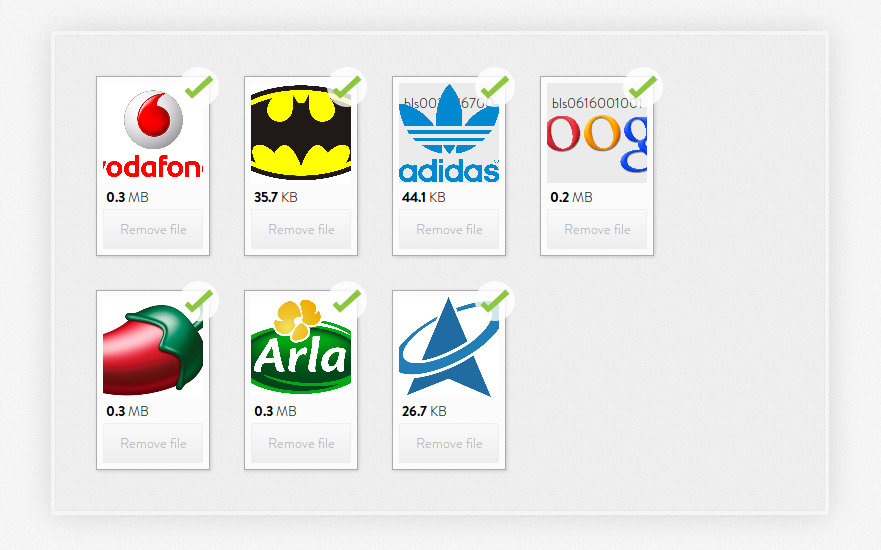

Ruby on Rails, Paperclip ve Dropzone.js ile sürükle bırak dosya yükleme uygulaması
Dropzone.js
Daha önceki projelerde jquery-fileupload-rails gemini kullanmıştım ama onlarca satır haml ve erb kodu yazmak pek içime sinmemişti bu işin daha basit bir yöntemi olmalı demiştim bu arayışıta dropzone ile karşılaştım basitliği ve eski tarayıcılara destek vermemesi beni cezbetti (like a jquery 2)
Diğerlerinden Farkı
- Küçük boyut
- Framework bağımsız
- Güncel Tarayıcı API'leri
- Sade Tasarım
- Resimlerde Küçültülmüş önizleme
Kurulum
Rails projemizi oluşturalım
rails new rails-paperclip-dropzone-example
Gemler
Rails projemize ilk olarak dropzonejs-rails ve paperclip gemlerini dahil ediyoruz.
gem 'dropzonejs-rails' gem 'paperclip'
Assets
application.css.sass
@import 'dropzone/dropzone'
application.js.coffee
#= require dropzone
Scaffold
Gerekli model ve controllerları scaffold yardımıyla oluşturalım.
rails g scaffold product name:string
rails g scaffold photo photo:attachment product:references
prodcut.rb model dosyasına aşağıdaki ilişkiyi tanımlıyoruz.
has_many :photos
Kullanımı
application.js.coffee
Dropzone.options.photoDropzone =
paramName: "photo"
maxFilesize: 2 #mb
addRemoveLinks: true
init: ->
@on 'removedfile', (file) ->
if file.xhr
$.ajax
url: "#{$("#photo-dropzone").attr "action"}/#{JSON.parse(file.xhr.response).id}"
type: 'DELETE'
Sürükle bırak formu için aşağıdaki kodu formun çıkmasını istediğimiz haml dosyasına yazıyoruz.
= form_for [@product, Photo.new], multipart: true, html: {class: :dropzone, id: 'photo-dropzone'} do |f|
= f.hidden_field :photo
= f.hidden_field :product_id, value: @product.id
Controller içinde sadece create methodunun bulunması yeterli tabi dropzone içersinde silmek için buton çıkarabileceğiniz bir ayar mevcut bununla birlikte silme gibi işlemleri halledebileceğinizi düşünüyorum.
def create @photo = Photo.create(photo: params[:photo], product_id: params[:photo][:product_id]) render json: @photo end def destroy @photo = Photo.find(params[:id]) @photo.destroy render nothing: true end
Toplamda 10 satırda projelerinize sürükle bırak dosya yükleme formu yapabilirsiniz. 
5 ay sonra gelen güncelleme:
Silme işlemi eklendi. Kodumuz silme işleminide ekleyince 10 satırı geçti kusura bakmayın artık. :D ileride demo uygulama yapabilirim validasyon mesajlarını gösteren serverda thumnail oluşunca güncellemeli falan..
comments powered by Disqus